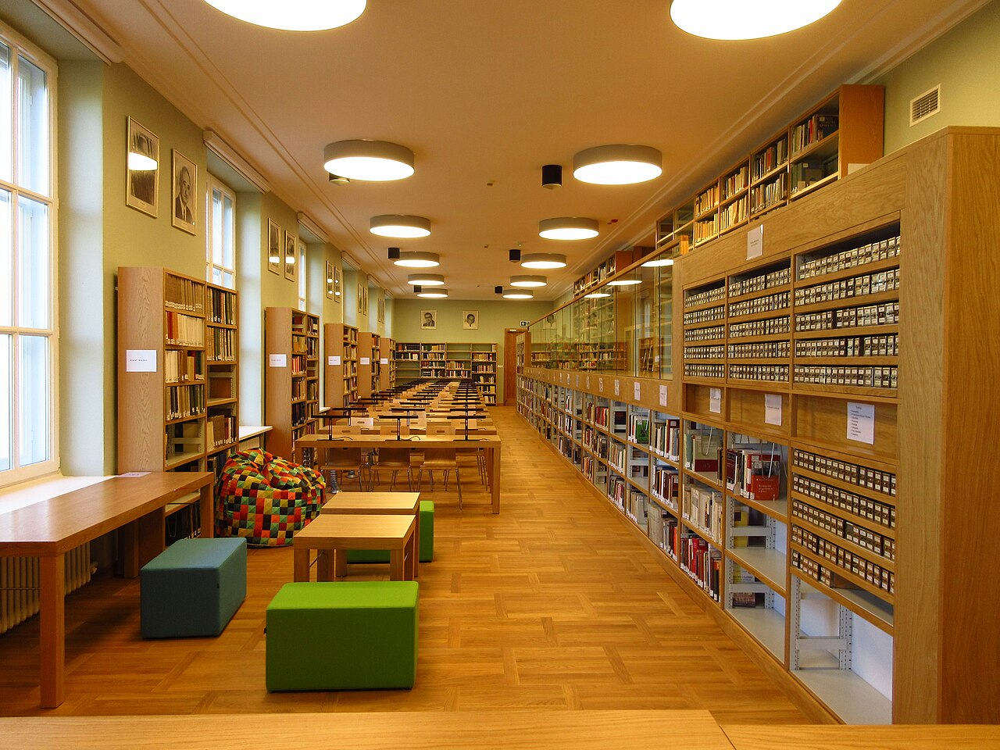

W grodziskiej Mediatece odbędzie się spotkanie Dyskusyjnego Klubu Książki
27 października o godzinie 18:00 w Bibliotece Głównej przy ulicy 3 Maja 57 w Grodzisku Mazowieckim zaplanowano spotkanie Dyskusyjnego Klubu Książki. Uczestnicy bezpłatnego wydarzenia porozmawiają o książce „Yellowface” autorstwa Rebecci F. Kuang.
Kiedy:
Zobacz źródło →